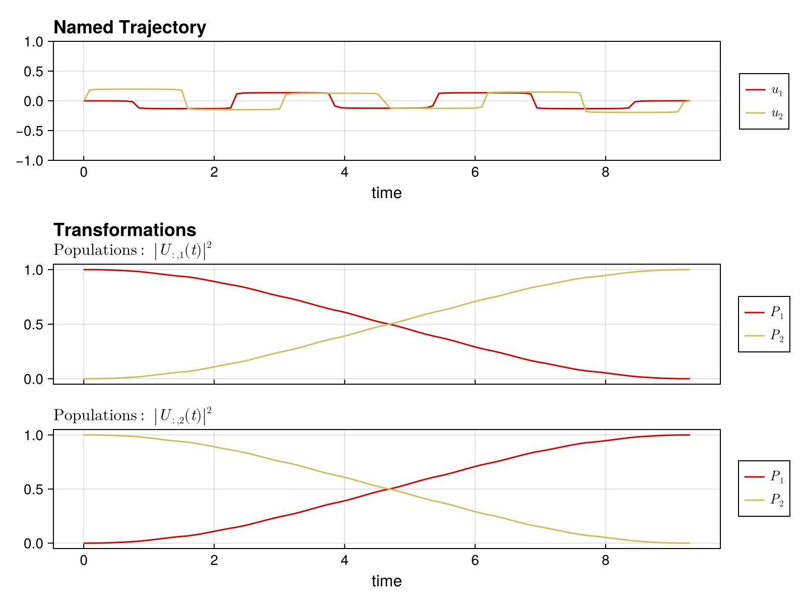
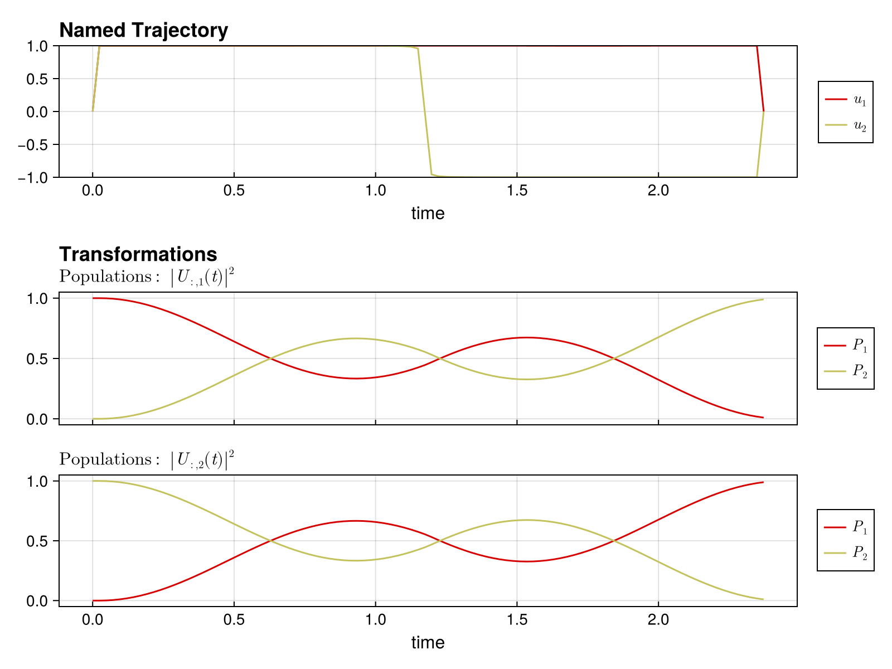

BangBangPulseProblem
BangBangPulseProblem promotes bang-bang (piecewise-constant, few-switch) controls by penalizing $\|du\|_1$ via an exact slack reformulation. Unlike SmoothPulseProblem (which uses 2 derivative levels with L2 regularization), this stores only 1 derivative (du) and uses slack variables to impose an exact L1 penalty, promoting sparsity in du and thus fewer switches.
When to Use
Use BangBangPulseProblem when:
- You want piecewise constant control pulses with minimal switching
- You want to promote bang-bang style controls (long constant segments)
- You prefer exact L1 regularization over smooth L2 approximations
Comparison with SmoothPulseProblem
| SmoothPulseProblem | BangBangPulseProblem | |
|---|---|---|
| Derivatives stored | du, ddu | du only |
Regularization on du | L2 (QuadraticRegularizer) | L1 (LinearRegularizer on slacks) |
Regularization on u | L2 | L2 (same) |
| Extra variables | — | slack s_du ≥ 0 |
| Extra constraints | — | L1SlackConstraint: $|du| \leq s$ |
| Bound params | du_bound, ddu_bound | du_bound only |
How the L1 Penalty Works
Instead of a smooth approximation, the L1 penalty uses an exact slack reformulation. Slack variables $s \geq 0$ (same dimension as du) are introduced with the constraint:
\[|du_{k,i}| \leq s_{k,i}\]
Then the linear cost $R_{du} \sum_k \sum_i s_{k,i} \Delta t_k$ is minimized. At optimality, $s = |du|$, giving the exact L1 norm.
Pulse Requirement
BangBangPulseProblem requires a trajectory with a ZeroOrderPulse:
pulse = ZeroOrderPulse(controls, times)
qtraj = UnitaryTrajectory(sys, pulse, U_goal)
qcp = BangBangPulseProblem(qtraj, N) # WorksUsing a spline pulse will result in an error directing you to SplinePulseProblem.
Constructor
BangBangPulseProblem(
qtraj::AbstractQuantumTrajectory{<:ZeroOrderPulse},
N::Int;
kwargs...
)Parameter Reference
Required Parameters
| Parameter | Type | Description |
|---|---|---|
qtraj | AbstractQuantumTrajectory{ZeroOrderPulse} | Quantum trajectory containing system, pulse, and goal |
N | Int | Number of discretization timesteps |
Objective Weights
| Parameter | Type | Default | Description |
|---|---|---|---|
Q | Float64 | 100.0 | Weight on infidelity objective. Higher values prioritize achieving target fidelity. |
R | Float64 | 1e-2 | Base regularization weight applied to all terms. |
R_u | Float64 or Vector{Float64} | 0.0 | L2 regularization on control values. Defaults to 0 (no amplitude regularization). Can be per-drive. |
R_du | Float64 or Vector{Float64} | R | L1 weight on first derivative (applied to slacks). Higher values produce fewer switches. |
Bounds
| Parameter | Type | Default | Description |
|---|---|---|---|
du_bound | Float64 | Inf | Maximum allowed control jump between timesteps. |
Δt_bounds | Tuple{Float64, Float64} | nothing | Time-step bounds (min, max) for free-time optimization. Required for MinimumTimeProblem. |
Advanced Options
| Parameter | Type | Default | Description |
|---|---|---|---|
integrator | AbstractIntegrator | nothing | Custom integrator. If nothing, uses BilinearIntegrator. |
global_names | Vector{Symbol} | nothing | Names of global parameters to optimize (requires custom integrator). |
global_bounds | Dict{Symbol, ...} | nothing | Bounds on global variables. Values can be Float64 (symmetric ±) or Tuple{Float64, Float64}. |
constraints | Vector{AbstractConstraint} | [] | Additional constraints to add to the problem. |
piccolo_options | PiccoloOptions | PiccoloOptions() | Solver and leakage options. |
Examples
Basic Gate Synthesis
using Piccolo
using CairoMakie
# Define system
H_drift = PAULIS[:Z]
H_drives = [PAULIS[:X], PAULIS[:Y]]
sys = QuantumSystem(H_drift, H_drives, [1.0, 1.0])
# Create trajectory
T, N = 10.0, 100
times = collect(range(0, T, length = N))
pulse = ZeroOrderPulse(0.1 * randn(2, N), times)
qtraj = UnitaryTrajectory(sys, pulse, GATES[:X])
# Solve with L1 regularization on du
qcp = BangBangPulseProblem(qtraj, N; Q = 100.0, R_du = 1.0)
solve!(qcp; max_iter = 200) constructing BangBangPulseProblem for UnitaryTrajectory...
applying timesteps_all_equal constraint: Δt
┌ Warning: Trajectory has timestep variable :Δt but no bounds on it.
│ Adding default lower bound of 0 to prevent negative timesteps.
│
│ Recommended: Add explicit bounds when creating the trajectory:
│ NamedTrajectory(...; Δt_bounds=(min, max))
│ Example:
│ NamedTrajectory(qtraj, N; Δt_bounds=(1e-3, 0.5))
│
│ Or use timesteps_all_equal=true in problem options to fix timesteps.
└ @ DirectTrajOpt.Problems ~/.julia/packages/DirectTrajOpt/gniE1/src/problems.jl:66
******************************************************************************
This program contains Ipopt, a library for large-scale nonlinear optimization.
Ipopt is released as open source code under the Eclipse Public License (EPL).
For more information visit https://github.com/coin-or/Ipopt
******************************************************************************
This is Ipopt version 3.14.19, running with linear solver MUMPS 5.8.2.
Number of nonzeros in equality constraint Jacobian...: 32044
Number of nonzeros in inequality constraint Jacobian.: 800
Number of nonzeros in Lagrangian Hessian.............: 38584
Total number of variables............................: 1587
variables with only lower bounds: 300
variables with lower and upper bounds: 988
variables with only upper bounds: 0
Total number of equality constraints.................: 1188
Total number of inequality constraints...............: 400
inequality constraints with only lower bounds: 0
inequality constraints with lower and upper bounds: 0
inequality constraints with only upper bounds: 400
iter objective inf_pr inf_du lg(mu) ||d|| lg(rg) alpha_du alpha_pr ls
0 1.1982910e+02 5.56e-02 1.27e+00 0.0 0.00e+00 - 0.00e+00 0.00e+00 0
1 1.2017587e+02 1.41e-04 7.92e+00 -1.3 5.12e-02 2.0 9.85e-01 1.00e+00f 1
2 1.1990412e+02 5.07e-06 1.92e+00 -1.4 1.76e-02 1.5 9.46e-01 1.00e+00f 1
3 1.1784573e+02 1.21e-04 1.34e+00 -1.5 1.26e-01 1.0 9.62e-01 1.00e+00f 1
4 7.8678373e+01 5.06e-03 1.26e+01 -0.8 1.26e+00 0.6 2.68e-01 3.66e-01f 1
⋮
42 3.2418217e+00 2.61e-08 1.45e-02 -4.0 2.90e-02 - 1.00e+00 1.00e+00h 1
43 3.2418216e+00 1.32e-12 8.02e-05 -4.0 1.60e-04 - 1.00e+00 1.00e+00h 1
44 3.2418216e+00 1.83e-15 1.61e-06 -4.0 3.22e-06 - 1.00e+00 1.00e+00h 1
45 3.2418216e+00 1.10e-15 8.26e-08 -4.0 1.67e-07 - 1.00e+00 1.00e+00h 1
46 3.2418216e+00 1.46e-15 4.35e-09 -4.0 9.05e-09 - 1.00e+00 1.00e+00h 1
Number of Iterations....: 46
(scaled) (unscaled)
Objective...............: 3.2418215806720534e+00 3.2418215806720534e+00
Dual infeasibility......: 4.3470809183224213e-09 4.3470809183224213e-09
Constraint violation....: 1.4571677198205180e-15 1.4571677198205180e-15
Variable bound violation: 0.0000000000000000e+00 0.0000000000000000e+00
Complementarity.........: 1.0000000000006086e-04 1.0000000000006086e-04
Overall NLP error.......: 4.3470809183224213e-09 4.3470809183224213e-09
Number of objective function evaluations = 47
Number of objective gradient evaluations = 47
Number of equality constraint evaluations = 47
Number of inequality constraint evaluations = 47
Number of equality constraint Jacobian evaluations = 47
Number of inequality constraint Jacobian evaluations = 47
Number of Lagrangian Hessian evaluations = 46
Total seconds in IPOPT = 17.252
EXIT: Optimal Solution Found.
initializing optimizer...
applying constraint: timesteps all equal constraint
applying constraint: L1 slack constraint: |du| ≤ s_du
applying constraint: initial value of Ũ⃗
applying constraint: initial value of u
applying constraint: final value of u
applying constraint: bounds on Ũ⃗
applying constraint: bounds on u
applying constraint: bounds on du
applying constraint: bounds on s_du
applying constraint: bounds on Δt
applying constraint: time consistency constraint (t_{k+1} = t_k + Δt_k)
applying constraint: initial time t₁ = 0
[ Info: Loaded cached trajectory from bang_bang_basic_43c9960.jld2fidelity(qcp)0.9998854810194968Visualize unitary populations
traj = get_trajectory(qcp)
fig = plot_unitary_populations(traj)
Minimum Time
qcp_min = MinimumTimeProblem(qcp, final_fidelity = 0.99)
solve!(qcp_min; max_iter = 300) constructing MinimumTimeProblem from QuantumControlProblem{UnitaryTrajectory{ZeroOrderPulse{DataInterpolations.ConstantInterpolation{Matrix{Float64}, Vector{Float64}, Vector{Union{}}, Float64}}, SciMLBase.ODESolution{ComplexF64, 3, Vector{Matrix{ComplexF64}}, Nothing, Nothing, Vector{Float64}, Vector{Vector{Matrix{ComplexF64}}}, Nothing, SciMLBase.ODEProblem{Matrix{ComplexF64}, Tuple{Float64, Float64}, true, SciMLBase.NullParameters, SciMLBase.ODEFunction{true, SciMLBase.FullSpecialize, SciMLOperators.MatrixOperator{ComplexF64, Matrix{ComplexF64}, SciMLOperators.FilterKwargs{Nothing, Val{()}}, SciMLOperators.FilterKwargs{Piccolo.Quantum.Rollouts.var"#update!#_construct_operator##2"{QuantumSystem{Piccolo.Quantum.QuantumSystems.var"#32#33"{SparseArrays.SparseMatrixCSC{ComplexF64, Int64}, Vector{SparseArrays.SparseMatrixCSC{ComplexF64, Int64}}, Int64}, Piccolo.Quantum.QuantumSystems.var"#34#35"{Vector{SparseArrays.SparseMatrixCSC{Float64, Int64}}, Int64, SparseArrays.SparseMatrixCSC{Float64, Int64}}, @NamedTuple{}}}, Val{()}}}, LinearAlgebra.UniformScaling{Bool}, Nothing, Nothing, Nothing, Nothing, Nothing, Nothing, Nothing, Nothing, Nothing, Nothing, Nothing, Nothing, typeof(SciMLBase.DEFAULT_OBSERVED), Nothing, Piccolo.Quantum.Rollouts.PiccoloRolloutSystem{Union{Int64, AbstractVector{Int64}, CartesianIndex, CartesianIndices}}, Nothing, Nothing}, Base.Pairs{Symbol, Vector{Float64}, Nothing, @NamedTuple{tstops::Vector{Float64}}}, SciMLBase.StandardODEProblem}, OrdinaryDiffEqLinear.MagnusAdapt4, OrdinaryDiffEqCore.InterpolationData{SciMLBase.ODEFunction{true, SciMLBase.FullSpecialize, SciMLOperators.MatrixOperator{ComplexF64, Matrix{ComplexF64}, SciMLOperators.FilterKwargs{Nothing, Val{()}}, SciMLOperators.FilterKwargs{Piccolo.Quantum.Rollouts.var"#update!#_construct_operator##2"{QuantumSystem{Piccolo.Quantum.QuantumSystems.var"#32#33"{SparseArrays.SparseMatrixCSC{ComplexF64, Int64}, Vector{SparseArrays.SparseMatrixCSC{ComplexF64, Int64}}, Int64}, Piccolo.Quantum.QuantumSystems.var"#34#35"{Vector{SparseArrays.SparseMatrixCSC{Float64, Int64}}, Int64, SparseArrays.SparseMatrixCSC{Float64, Int64}}, @NamedTuple{}}}, Val{()}}}, LinearAlgebra.UniformScaling{Bool}, Nothing, Nothing, Nothing, Nothing, Nothing, Nothing, Nothing, Nothing, Nothing, Nothing, Nothing, Nothing, typeof(SciMLBase.DEFAULT_OBSERVED), Nothing, Piccolo.Quantum.Rollouts.PiccoloRolloutSystem{Union{Int64, AbstractVector{Int64}, CartesianIndex, CartesianIndices}}, Nothing, Nothing}, Vector{Matrix{ComplexF64}}, Vector{Float64}, Vector{Vector{Matrix{ComplexF64}}}, Nothing, OrdinaryDiffEqLinear.MagnusAdapt4Cache{Matrix{ComplexF64}, Matrix{ComplexF64}, Matrix{ComplexF64}, Matrix{ComplexF64}, Nothing}, Nothing}, SciMLBase.DEStats, Nothing, Nothing, Nothing, Nothing}, Matrix{ComplexF64}}}...
final fidelity constraint: 0.99
minimum-time weight D: 100.0
This is Ipopt version 3.14.19, running with linear solver MUMPS 5.8.2.
Number of nonzeros in equality constraint Jacobian...: 32044
Number of nonzeros in inequality constraint Jacobian.: 808
Number of nonzeros in Lagrangian Hessian.............: 38584
Total number of variables............................: 1587
variables with only lower bounds: 300
variables with lower and upper bounds: 988
variables with only upper bounds: 0
Total number of equality constraints.................: 1188
Total number of inequality constraints...............: 401
inequality constraints with only lower bounds: 0
inequality constraints with lower and upper bounds: 0
inequality constraints with only upper bounds: 401
iter objective inf_pr inf_du lg(mu) ||d|| lg(rg) alpha_du alpha_pr ls
0 9.3466811e+02 9.90e-03 1.65e+00 0.0 0.00e+00 - 0.00e+00 0.00e+00 0
1 9.1269689e+02 3.96e-03 3.53e+00 -4.0 2.55e+00 - 2.29e-01 2.93e-01f 1
2 9.0173487e+02 1.11e-02 3.70e+00 -4.0 9.50e-01 0.0 1.20e-01 2.01e-01f 1
3 8.6220156e+02 3.15e-03 2.53e+02 -1.3 5.49e-01 0.4 2.46e-01 9.71e-01f 1
4 8.0366696e+02 6.95e-03 1.66e+02 -1.4 1.51e+00 -0.1 2.73e-01 3.98e-01f 1
⋮
67 2.4423265e+02 9.63e-07 1.90e+00 -4.0 3.92e+00 - 1.00e+00 1.00e+00h 1
68 2.4423246e+02 7.15e-09 2.02e-01 -4.0 4.18e-01 - 1.00e+00 1.00e+00h 1
69 2.4423246e+02 1.84e-13 9.69e-04 -4.0 2.00e-03 - 1.00e+00 1.00e+00h 1
iter objective inf_pr inf_du lg(mu) ||d|| lg(rg) alpha_du alpha_pr ls
70 2.4423246e+02 2.67e-16 1.15e-07 -4.0 2.40e-07 - 1.00e+00 1.00e+00h 1
71 2.4423246e+02 2.64e-16 1.00e-09 -4.0 6.44e-12 - 1.00e+00 1.00e+00h 1
Number of Iterations....: 71
(scaled) (unscaled)
Objective...............: 2.3635307042079774e+02 2.4423245763408104e+02
Dual infeasibility......: 1.0017716708249358e-09 1.0351680928797638e-09
Constraint violation....: 2.6367796834847468e-16 2.6367796834847468e-16
Variable bound violation: 0.0000000000000000e+00 0.0000000000000000e+00
Complementarity.........: 1.0000000000008403e-04 1.0333373592289716e-04
Overall NLP error.......: 1.0017716708249358e-09 1.0351680928797638e-09
Number of objective function evaluations = 72
Number of objective gradient evaluations = 72
Number of equality constraint evaluations = 72
Number of inequality constraint evaluations = 72
Number of equality constraint Jacobian evaluations = 72
Number of inequality constraint Jacobian evaluations = 72
Number of Lagrangian Hessian evaluations = 71
Total seconds in IPOPT = 9.159
EXIT: Optimal Solution Found.
initializing optimizer...
applying constraint: timesteps all equal constraint
applying constraint: L1 slack constraint: |du| ≤ s_du
applying constraint: initial value of Ũ⃗
applying constraint: initial value of u
applying constraint: final value of u
applying constraint: bounds on Ũ⃗
applying constraint: bounds on u
applying constraint: bounds on du
applying constraint: bounds on s_du
applying constraint: bounds on Δt
applying constraint: time consistency constraint (t_{k+1} = t_k + Δt_k)
applying constraint: initial time t₁ = 0
[ Info: Loaded cached trajectory from bang_bang_min_time_43c9960.jld2before = get_duration(traj)
after = duration(get_pulse(qcp_min.qtraj))
before - after6.922172753439191fig = plot_unitary_populations(get_trajectory(qcp_min))
Tuning the L1 Weight
The R_du parameter controls how aggressively switches are penalized. Higher values produce fewer switches (more bang-bang):
qcp = BangBangPulseProblem(
qtraj,
N;
Q = 100.0,
R_du = 1.0, ## Strong L1 penalty → fewer switches
)QuantumControlProblem{UnitaryTrajectory{ZeroOrderPulse{DataInterpolations.ConstantInterpolation{Matrix{Float64}, Vector{Float64}, Vector{Union{}}, Float64}}, SciMLBase.ODESolution{ComplexF64, 3, Vector{Matrix{ComplexF64}}, Nothing, Nothing, Vector{Float64}, Vector{Vector{Matrix{ComplexF64}}}, Nothing, SciMLBase.ODEProblem{Matrix{ComplexF64}, Tuple{Float64, Float64}, true, SciMLBase.NullParameters, SciMLBase.ODEFunction{true, SciMLBase.FullSpecialize, SciMLOperators.MatrixOperator{ComplexF64, Matrix{ComplexF64}, SciMLOperators.FilterKwargs{Nothing, Val{()}}, SciMLOperators.FilterKwargs{Piccolo.Quantum.Rollouts.var"#update!#_construct_operator##2"{QuantumSystem{Piccolo.Quantum.QuantumSystems.var"#32#33"{SparseArrays.SparseMatrixCSC{ComplexF64, Int64}, Vector{SparseArrays.SparseMatrixCSC{ComplexF64, Int64}}, Int64}, Piccolo.Quantum.QuantumSystems.var"#34#35"{Vector{SparseArrays.SparseMatrixCSC{Float64, Int64}}, Int64, SparseArrays.SparseMatrixCSC{Float64, Int64}}, @NamedTuple{}}}, Val{()}}}, LinearAlgebra.UniformScaling{Bool}, Nothing, Nothing, Nothing, Nothing, Nothing, Nothing, Nothing, Nothing, Nothing, Nothing, Nothing, Nothing, typeof(SciMLBase.DEFAULT_OBSERVED), Nothing, Piccolo.Quantum.Rollouts.PiccoloRolloutSystem{Union{Int64, AbstractVector{Int64}, CartesianIndex, CartesianIndices}}, Nothing, Nothing}, Base.Pairs{Symbol, Vector{Float64}, Nothing, @NamedTuple{tstops::Vector{Float64}}}, SciMLBase.StandardODEProblem}, OrdinaryDiffEqLinear.MagnusAdapt4, OrdinaryDiffEqCore.InterpolationData{SciMLBase.ODEFunction{true, SciMLBase.FullSpecialize, SciMLOperators.MatrixOperator{ComplexF64, Matrix{ComplexF64}, SciMLOperators.FilterKwargs{Nothing, Val{()}}, SciMLOperators.FilterKwargs{Piccolo.Quantum.Rollouts.var"#update!#_construct_operator##2"{QuantumSystem{Piccolo.Quantum.QuantumSystems.var"#32#33"{SparseArrays.SparseMatrixCSC{ComplexF64, Int64}, Vector{SparseArrays.SparseMatrixCSC{ComplexF64, Int64}}, Int64}, Piccolo.Quantum.QuantumSystems.var"#34#35"{Vector{SparseArrays.SparseMatrixCSC{Float64, Int64}}, Int64, SparseArrays.SparseMatrixCSC{Float64, Int64}}, @NamedTuple{}}}, Val{()}}}, LinearAlgebra.UniformScaling{Bool}, Nothing, Nothing, Nothing, Nothing, Nothing, Nothing, Nothing, Nothing, Nothing, Nothing, Nothing, Nothing, typeof(SciMLBase.DEFAULT_OBSERVED), Nothing, Piccolo.Quantum.Rollouts.PiccoloRolloutSystem{Union{Int64, AbstractVector{Int64}, CartesianIndex, CartesianIndices}}, Nothing, Nothing}, Vector{Matrix{ComplexF64}}, Vector{Float64}, Vector{Vector{Matrix{ComplexF64}}}, Nothing, OrdinaryDiffEqLinear.MagnusAdapt4Cache{Matrix{ComplexF64}, Matrix{ComplexF64}, Matrix{ComplexF64}, Matrix{ComplexF64}, Nothing}, Nothing}, SciMLBase.DEStats, Nothing, Nothing, Nothing, Nothing}, Matrix{ComplexF64}}}
System: QuantumSystem{Piccolo.Quantum.QuantumSystems.var"#32#33"{SparseArrays.SparseMatrixCSC{ComplexF64, Int64}, Vector{SparseArrays.SparseMatrixCSC{ComplexF64, Int64}}, Int64}, Piccolo.Quantum.QuantumSystems.var"#34#35"{Vector{SparseArrays.SparseMatrixCSC{Float64, Int64}}, Int64, SparseArrays.SparseMatrixCSC{Float64, Int64}}, @NamedTuple{}}
Goal: Matrix{ComplexF64}
Trajectory: 100 knots
State: Ũ⃗
Controls: uWith Derivative Bounds
Constrain the maximum control jump size:
qcp = BangBangPulseProblem(
qtraj,
N;
Q = 100.0,
R_du = 1e-1,
du_bound = 0.5, ## Limit control jumps
)QuantumControlProblem{UnitaryTrajectory{ZeroOrderPulse{DataInterpolations.ConstantInterpolation{Matrix{Float64}, Vector{Float64}, Vector{Union{}}, Float64}}, SciMLBase.ODESolution{ComplexF64, 3, Vector{Matrix{ComplexF64}}, Nothing, Nothing, Vector{Float64}, Vector{Vector{Matrix{ComplexF64}}}, Nothing, SciMLBase.ODEProblem{Matrix{ComplexF64}, Tuple{Float64, Float64}, true, SciMLBase.NullParameters, SciMLBase.ODEFunction{true, SciMLBase.FullSpecialize, SciMLOperators.MatrixOperator{ComplexF64, Matrix{ComplexF64}, SciMLOperators.FilterKwargs{Nothing, Val{()}}, SciMLOperators.FilterKwargs{Piccolo.Quantum.Rollouts.var"#update!#_construct_operator##2"{QuantumSystem{Piccolo.Quantum.QuantumSystems.var"#32#33"{SparseArrays.SparseMatrixCSC{ComplexF64, Int64}, Vector{SparseArrays.SparseMatrixCSC{ComplexF64, Int64}}, Int64}, Piccolo.Quantum.QuantumSystems.var"#34#35"{Vector{SparseArrays.SparseMatrixCSC{Float64, Int64}}, Int64, SparseArrays.SparseMatrixCSC{Float64, Int64}}, @NamedTuple{}}}, Val{()}}}, LinearAlgebra.UniformScaling{Bool}, Nothing, Nothing, Nothing, Nothing, Nothing, Nothing, Nothing, Nothing, Nothing, Nothing, Nothing, Nothing, typeof(SciMLBase.DEFAULT_OBSERVED), Nothing, Piccolo.Quantum.Rollouts.PiccoloRolloutSystem{Union{Int64, AbstractVector{Int64}, CartesianIndex, CartesianIndices}}, Nothing, Nothing}, Base.Pairs{Symbol, Vector{Float64}, Nothing, @NamedTuple{tstops::Vector{Float64}}}, SciMLBase.StandardODEProblem}, OrdinaryDiffEqLinear.MagnusAdapt4, OrdinaryDiffEqCore.InterpolationData{SciMLBase.ODEFunction{true, SciMLBase.FullSpecialize, SciMLOperators.MatrixOperator{ComplexF64, Matrix{ComplexF64}, SciMLOperators.FilterKwargs{Nothing, Val{()}}, SciMLOperators.FilterKwargs{Piccolo.Quantum.Rollouts.var"#update!#_construct_operator##2"{QuantumSystem{Piccolo.Quantum.QuantumSystems.var"#32#33"{SparseArrays.SparseMatrixCSC{ComplexF64, Int64}, Vector{SparseArrays.SparseMatrixCSC{ComplexF64, Int64}}, Int64}, Piccolo.Quantum.QuantumSystems.var"#34#35"{Vector{SparseArrays.SparseMatrixCSC{Float64, Int64}}, Int64, SparseArrays.SparseMatrixCSC{Float64, Int64}}, @NamedTuple{}}}, Val{()}}}, LinearAlgebra.UniformScaling{Bool}, Nothing, Nothing, Nothing, Nothing, Nothing, Nothing, Nothing, Nothing, Nothing, Nothing, Nothing, Nothing, typeof(SciMLBase.DEFAULT_OBSERVED), Nothing, Piccolo.Quantum.Rollouts.PiccoloRolloutSystem{Union{Int64, AbstractVector{Int64}, CartesianIndex, CartesianIndices}}, Nothing, Nothing}, Vector{Matrix{ComplexF64}}, Vector{Float64}, Vector{Vector{Matrix{ComplexF64}}}, Nothing, OrdinaryDiffEqLinear.MagnusAdapt4Cache{Matrix{ComplexF64}, Matrix{ComplexF64}, Matrix{ComplexF64}, Matrix{ComplexF64}, Nothing}, Nothing}, SciMLBase.DEStats, Nothing, Nothing, Nothing, Nothing}, Matrix{ComplexF64}}}
System: QuantumSystem{Piccolo.Quantum.QuantumSystems.var"#32#33"{SparseArrays.SparseMatrixCSC{ComplexF64, Int64}, Vector{SparseArrays.SparseMatrixCSC{ComplexF64, Int64}}, Int64}, Piccolo.Quantum.QuantumSystems.var"#34#35"{Vector{SparseArrays.SparseMatrixCSC{Float64, Int64}}, Int64, SparseArrays.SparseMatrixCSC{Float64, Int64}}, @NamedTuple{}}
Goal: Matrix{ComplexF64}
Trajectory: 100 knots
State: Ũ⃗
Controls: uPer-Drive Regularization
Apply different L1 weights to different control channels:
qcp = BangBangPulseProblem(
qtraj,
N;
Q = 100.0,
R_u = [1e-3, 1e-2], ## Less L2 regularization on drive 1
R_du = [1e-1, 1.0], ## Stronger L1 on drive 2
)QuantumControlProblem{UnitaryTrajectory{ZeroOrderPulse{DataInterpolations.ConstantInterpolation{Matrix{Float64}, Vector{Float64}, Vector{Union{}}, Float64}}, SciMLBase.ODESolution{ComplexF64, 3, Vector{Matrix{ComplexF64}}, Nothing, Nothing, Vector{Float64}, Vector{Vector{Matrix{ComplexF64}}}, Nothing, SciMLBase.ODEProblem{Matrix{ComplexF64}, Tuple{Float64, Float64}, true, SciMLBase.NullParameters, SciMLBase.ODEFunction{true, SciMLBase.FullSpecialize, SciMLOperators.MatrixOperator{ComplexF64, Matrix{ComplexF64}, SciMLOperators.FilterKwargs{Nothing, Val{()}}, SciMLOperators.FilterKwargs{Piccolo.Quantum.Rollouts.var"#update!#_construct_operator##2"{QuantumSystem{Piccolo.Quantum.QuantumSystems.var"#32#33"{SparseArrays.SparseMatrixCSC{ComplexF64, Int64}, Vector{SparseArrays.SparseMatrixCSC{ComplexF64, Int64}}, Int64}, Piccolo.Quantum.QuantumSystems.var"#34#35"{Vector{SparseArrays.SparseMatrixCSC{Float64, Int64}}, Int64, SparseArrays.SparseMatrixCSC{Float64, Int64}}, @NamedTuple{}}}, Val{()}}}, LinearAlgebra.UniformScaling{Bool}, Nothing, Nothing, Nothing, Nothing, Nothing, Nothing, Nothing, Nothing, Nothing, Nothing, Nothing, Nothing, typeof(SciMLBase.DEFAULT_OBSERVED), Nothing, Piccolo.Quantum.Rollouts.PiccoloRolloutSystem{Union{Int64, AbstractVector{Int64}, CartesianIndex, CartesianIndices}}, Nothing, Nothing}, Base.Pairs{Symbol, Vector{Float64}, Nothing, @NamedTuple{tstops::Vector{Float64}}}, SciMLBase.StandardODEProblem}, OrdinaryDiffEqLinear.MagnusAdapt4, OrdinaryDiffEqCore.InterpolationData{SciMLBase.ODEFunction{true, SciMLBase.FullSpecialize, SciMLOperators.MatrixOperator{ComplexF64, Matrix{ComplexF64}, SciMLOperators.FilterKwargs{Nothing, Val{()}}, SciMLOperators.FilterKwargs{Piccolo.Quantum.Rollouts.var"#update!#_construct_operator##2"{QuantumSystem{Piccolo.Quantum.QuantumSystems.var"#32#33"{SparseArrays.SparseMatrixCSC{ComplexF64, Int64}, Vector{SparseArrays.SparseMatrixCSC{ComplexF64, Int64}}, Int64}, Piccolo.Quantum.QuantumSystems.var"#34#35"{Vector{SparseArrays.SparseMatrixCSC{Float64, Int64}}, Int64, SparseArrays.SparseMatrixCSC{Float64, Int64}}, @NamedTuple{}}}, Val{()}}}, LinearAlgebra.UniformScaling{Bool}, Nothing, Nothing, Nothing, Nothing, Nothing, Nothing, Nothing, Nothing, Nothing, Nothing, Nothing, Nothing, typeof(SciMLBase.DEFAULT_OBSERVED), Nothing, Piccolo.Quantum.Rollouts.PiccoloRolloutSystem{Union{Int64, AbstractVector{Int64}, CartesianIndex, CartesianIndices}}, Nothing, Nothing}, Vector{Matrix{ComplexF64}}, Vector{Float64}, Vector{Vector{Matrix{ComplexF64}}}, Nothing, OrdinaryDiffEqLinear.MagnusAdapt4Cache{Matrix{ComplexF64}, Matrix{ComplexF64}, Matrix{ComplexF64}, Matrix{ComplexF64}, Nothing}, Nothing}, SciMLBase.DEStats, Nothing, Nothing, Nothing, Nothing}, Matrix{ComplexF64}}}
System: QuantumSystem{Piccolo.Quantum.QuantumSystems.var"#32#33"{SparseArrays.SparseMatrixCSC{ComplexF64, Int64}, Vector{SparseArrays.SparseMatrixCSC{ComplexF64, Int64}}, Int64}, Piccolo.Quantum.QuantumSystems.var"#34#35"{Vector{SparseArrays.SparseMatrixCSC{Float64, Int64}}, Int64, SparseArrays.SparseMatrixCSC{Float64, Int64}}, @NamedTuple{}}
Goal: Matrix{ComplexF64}
Trajectory: 100 knots
State: Ũ⃗
Controls: uState Transfer
ψ_init = ComplexF64[1, 0] ## |0⟩
ψ_goal = ComplexF64[0, 1] ## |1⟩
pulse = ZeroOrderPulse(0.1 * randn(2, N), times)
qtraj = KetTrajectory(sys, pulse, ψ_init, ψ_goal)
qcp = BangBangPulseProblem(qtraj, N; Q = 100.0, R_du = 1.0)
solve!(qcp; max_iter = 100) constructing BangBangPulseProblem for KetTrajectory...
applying timesteps_all_equal constraint: Δt
┌ Warning: Trajectory has timestep variable :Δt but no bounds on it.
│ Adding default lower bound of 0 to prevent negative timesteps.
│
│ Recommended: Add explicit bounds when creating the trajectory:
│ NamedTrajectory(...; Δt_bounds=(min, max))
│ Example:
│ NamedTrajectory(qtraj, N; Δt_bounds=(1e-3, 0.5))
│
│ Or use timesteps_all_equal=true in problem options to fix timesteps.
└ @ DirectTrajOpt.Problems ~/.julia/packages/DirectTrajOpt/gniE1/src/problems.jl:66
This is Ipopt version 3.14.19, running with linear solver MUMPS 5.8.2.
Number of nonzeros in equality constraint Jacobian...: 14696
Number of nonzeros in inequality constraint Jacobian.: 800
Number of nonzeros in Lagrangian Hessian.............: 21862
Total number of variables............................: 1191
variables with only lower bounds: 300
variables with lower and upper bounds: 592
variables with only upper bounds: 0
Total number of equality constraints.................: 792
Total number of inequality constraints...............: 400
inequality constraints with only lower bounds: 0
inequality constraints with lower and upper bounds: 0
inequality constraints with only upper bounds: 400
iter objective inf_pr inf_du lg(mu) ||d|| lg(rg) alpha_du alpha_pr ls
0 1.1195048e+02 1.96e-01 1.80e+00 0.0 0.00e+00 - 0.00e+00 0.00e+00 0
1 1.1020739e+02 7.07e-02 2.38e+01 -0.9 1.83e-01 2.0 9.30e-01 6.39e-01f 1
2 1.0550439e+02 4.69e-04 1.25e+01 -0.7 7.48e-02 1.5 9.81e-01 1.00e+00f 1
3 8.2050156e+01 1.29e-03 7.78e+00 -0.7 2.36e-01 1.0 7.23e-01 1.00e+00f 1
4 2.6132752e+01 4.26e-03 3.84e+02 -0.8 5.52e-01 0.6 5.98e-01 6.84e-01f 1
⋮
96 1.0141346e+01 1.15e-05 2.64e-01 -4.0 3.73e-01 -0.9 1.00e+00 2.32e-01f 1
97 9.7367060e+00 2.42e-05 2.91e+02 -3.7 1.11e+00 -1.4 1.00e+00 1.22e-01f 1
98 9.0073341e+00 1.70e-04 3.33e+01 -2.7 3.06e+00 -1.8 8.32e-01 1.14e-01f 1
99 8.9369477e+00 4.15e-07 1.13e-01 -4.0 1.90e-02 0.4 1.00e+00 1.00e+00h 1
iter objective inf_pr inf_du lg(mu) ||d|| lg(rg) alpha_du alpha_pr ls
100 8.7780124e+00 1.50e-06 5.50e-02 -4.0 5.84e-02 -0.1 1.00e+00 8.50e-01f 1
Number of Iterations....: 100
(scaled) (unscaled)
Objective...............: 8.7780124132994928e+00 8.7780124132994928e+00
Dual infeasibility......: 5.5021038885013897e-02 5.5021038885013897e-02
Constraint violation....: 1.4963190144968129e-06 1.4963190144968129e-06
Variable bound violation: 0.0000000000000000e+00 0.0000000000000000e+00
Complementarity.........: 1.4939958657379462e-04 1.4939958657379462e-04
Overall NLP error.......: 5.5021038885013897e-02 5.5021038885013897e-02
Number of objective function evaluations = 102
Number of objective gradient evaluations = 101
Number of equality constraint evaluations = 102
Number of inequality constraint evaluations = 102
Number of equality constraint Jacobian evaluations = 101
Number of inequality constraint Jacobian evaluations = 101
Number of Lagrangian Hessian evaluations = 100
Total seconds in IPOPT = 12.687
EXIT: Maximum Number of Iterations Exceeded.
initializing optimizer...
applying constraint: timesteps all equal constraint
applying constraint: L1 slack constraint: |du| ≤ s_du
applying constraint: initial value of ψ̃
applying constraint: initial value of u
applying constraint: final value of u
applying constraint: bounds on ψ̃
applying constraint: bounds on u
applying constraint: bounds on du
applying constraint: bounds on s_du
applying constraint: bounds on Δt
applying constraint: time consistency constraint (t_{k+1} = t_k + Δt_k)
applying constraint: initial time t₁ = 0
[ Info: Loaded cached trajectory from bang_bang_state_transfer_43c9960.jld2Multiple State Transfers
Use MultiKetTrajectory for gates defined by state mappings:
ψ0, ψ1 = ComplexF64[1, 0], ComplexF64[0, 1]
# X gate: |0⟩ → |1⟩ and |1⟩ → |0⟩
pulse = ZeroOrderPulse(0.1 * randn(2, N), times)
qtraj = MultiKetTrajectory(sys, pulse, [ψ0, ψ1], [ψ1, ψ0])
qcp = BangBangPulseProblem(qtraj, N; Q = 100.0, R_du = 1.0)
solve!(qcp; max_iter = 100) constructing BangBangPulseProblem for MultiKetTrajectory (2 states)...
applying timesteps_all_equal constraint: Δt
┌ Warning: Trajectory has timestep variable :Δt but no bounds on it.
│ Adding default lower bound of 0 to prevent negative timesteps.
│
│ Recommended: Add explicit bounds when creating the trajectory:
│ NamedTrajectory(...; Δt_bounds=(min, max))
│ Example:
│ NamedTrajectory(qtraj, N; Δt_bounds=(1e-3, 0.5))
│
│ Or use timesteps_all_equal=true in problem options to fix timesteps.
└ @ DirectTrajOpt.Problems ~/.julia/packages/DirectTrajOpt/gniE1/src/problems.jl:66
This is Ipopt version 3.14.19, running with linear solver MUMPS 5.8.2.
Number of nonzeros in equality constraint Jacobian...: 32044
Number of nonzeros in inequality constraint Jacobian.: 800
Number of nonzeros in Lagrangian Hessian.............: 38584
Total number of variables............................: 1587
variables with only lower bounds: 300
variables with lower and upper bounds: 988
variables with only upper bounds: 0
Total number of equality constraints.................: 1188
Total number of inequality constraints...............: 400
inequality constraints with only lower bounds: 0
inequality constraints with lower and upper bounds: 0
inequality constraints with only upper bounds: 400
iter objective inf_pr inf_du lg(mu) ||d|| lg(rg) alpha_du alpha_pr ls
0 1.2415350e+02 1.21e-01 1.22e+00 0.0 0.00e+00 - 0.00e+00 0.00e+00 0
1 1.2433806e+02 7.79e-02 1.40e+01 -0.9 1.46e-01 2.0 9.91e-01 3.56e-01f 1
2 1.2428881e+02 2.91e-04 1.47e+01 -0.6 1.68e-01 1.5 1.00e+00 1.00e+00f 1
3 1.2162207e+02 1.66e-04 7.89e+00 -1.1 8.71e-02 1.0 8.98e-01 1.00e+00f 1
4 3.1028769e+01 1.59e-02 4.58e+01 -0.4 1.36e+00 0.6 5.51e-01 5.71e-01f 1
⋮
96 3.3005075e+00 5.03e-10 1.75e-03 -4.1 3.50e-03 - 1.00e+00 1.00e+00h 1
97 3.3119512e+00 8.81e-06 2.98e-01 -4.0 5.99e-01 - 1.00e+00 1.00e+00f 1
98 3.3004798e+00 1.43e-05 3.16e-01 -4.1 6.34e-01 - 1.00e+00 1.00e+00h 1
99 3.3005148e+00 1.17e-06 8.52e-02 -4.1 1.70e-01 - 1.00e+00 1.00e+00h 1
iter objective inf_pr inf_du lg(mu) ||d|| lg(rg) alpha_du alpha_pr ls
100 3.3005083e+00 8.36e-09 5.34e-03 -4.1 1.07e-02 - 1.00e+00 1.00e+00h 1
Number of Iterations....: 100
(scaled) (unscaled)
Objective...............: 3.3005082649344404e+00 3.3005082649344404e+00
Dual infeasibility......: 5.3405531927499883e-03 5.3405531927499883e-03
Constraint violation....: 8.3626945646120276e-09 8.3626945646120276e-09
Variable bound violation: 0.0000000000000000e+00 0.0000000000000000e+00
Complementarity.........: 7.9998953223595626e-05 7.9998953223595626e-05
Overall NLP error.......: 5.3405531927499883e-03 5.3405531927499883e-03
Number of objective function evaluations = 131
Number of objective gradient evaluations = 101
Number of equality constraint evaluations = 131
Number of inequality constraint evaluations = 131
Number of equality constraint Jacobian evaluations = 101
Number of inequality constraint Jacobian evaluations = 101
Number of Lagrangian Hessian evaluations = 100
Total seconds in IPOPT = 22.596
EXIT: Maximum Number of Iterations Exceeded.
initializing optimizer...
applying constraint: timesteps all equal constraint
applying constraint: L1 slack constraint: |du| ≤ s_du
applying constraint: initial value of ψ̃1
applying constraint: initial value of ψ̃2
applying constraint: initial value of u
applying constraint: final value of u
applying constraint: bounds on ψ̃1
applying constraint: bounds on ψ̃2
applying constraint: bounds on u
applying constraint: bounds on du
applying constraint: bounds on s_du
applying constraint: bounds on Δt
applying constraint: time consistency constraint (t_{k+1} = t_k + Δt_k)
applying constraint: initial time t₁ = 0
[ Info: Loaded cached trajectory from bang_bang_multi_ket_43c9960.jld2How It Works
BangBangPulseProblem internally:
Adds 1 derivative variable: Creates
:du(first derivative) alongside controls:u(compared to 2 inSmoothPulseProblem)Adds slack variables: Creates
:s_du(non-negative, same dimension as:du), initialized at|du|Sets up integrators: Uses
DerivativeIntegratorto enforce:du[k] = (u[k+1] - u[k]) / Δt
Configures objectives:
- Infidelity objective with weight
Q - Quadratic (L2) regularization on
uwith weightR_u - Linear (L1) regularization on
s_duwith weightR_du
- Infidelity objective with weight
Applies constraints:
L1SlackConstraintenforces|du| ≤ s_du, anddu_boundas hard constraints
At optimality the slacks satisfy s = |du|, so the linear cost on s equals the exact L1 norm of du.
See Also
- SmoothPulseProblem - For smooth (L2-regularized) controls
- SplinePulseProblem - For inherently smooth spline-based controls
- MinimumTimeProblem - Time-optimal control
This page was generated using Literate.jl.